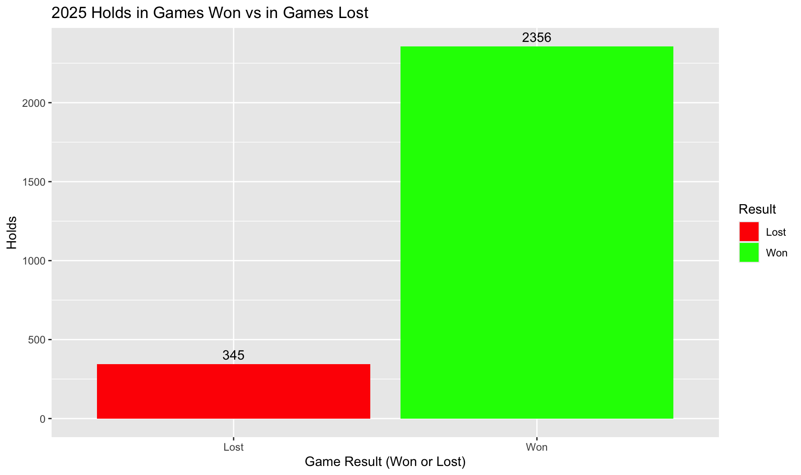
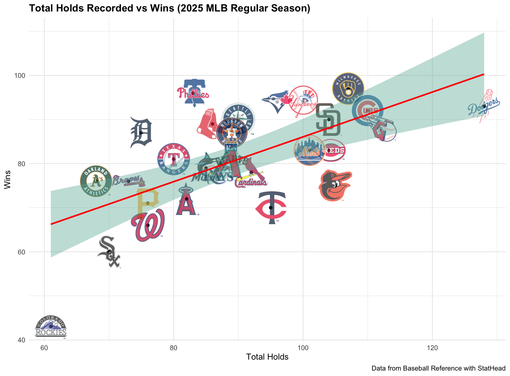
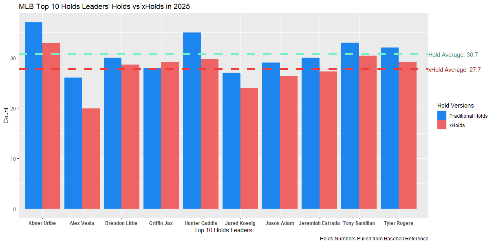

Toppling the Hold's Statistical Monopoly on MRPs and SUs
Welcome to the Opening Day of "Who Cares About Stats?". This issue is dedicated to the Hold. But before the analysis, A quick history of the statistic.
It's 1986: the Mets are iconic, Barry Bonds is a rookie, ~40% of the league is on cocaine (with 11 players suspended by Commissioner Ueberroth over substance abuse), and John Dewall and Mike O'Donnell invent the Hold. They wanted to give a "spot-and-score statistic", that is a stat like SB which doesn't require calculation, to Middle Relievers, but mainly Set-Ups.
A hold occurs when a relief pitcher enters the game in a save situation and maintains his team's lead for the next relief pitcher, while recording at least one out. One of two conditions must be met for a hold to be recorded1:
Note: A pitcher cannot earn a hold if he finishes the game, earns a save, or is the winning pitcher. Additionally, there are different numbers of holds between BRef and FanGraphs, so the data for this project was all sourced from fangraphs.
"The entire way they go about their business is a failure." - Fan Call-In on 1000 AM Chicago ESPN Sports Radio, 20232. The primary issue with the Holds is that a stat that gives value to a player should never entail so much of outside bias to even be possible. Teams with more wins almost always have more Holds and more save opportunities. This trend can be narrowed down smaller to game-level, where when a team deploys a parade of relievers, you get a game like the exhibition match between Israel and Miami. FIVE relievers recorded a Hold for Israel alone. The Marlins, ZERO. The Score? 1-0.

Of the 2701 holds recorded in the 2025 MLB season, only 345 were in games where the team lost. That means Holds in lost games account for only ~12.8% of all Holds recorded. Hold-by-team data shows a similar trend:

We can construe that, already, Holds are not a good measure of the effectiveness of a reliever, because it is often out of their hands. This is even more inappropriate when it is the sole unique measurement for Set-Ups and MRPs. This same reason is why W/L are such a hot topic for SP. This same trend does NOT apply to closeres regarding saves, because they only come in when their team is ahead or tied. Finally, the original definition of Hold said one cannot be obtained if the same pitcher records either a win, a save, or a game finished. What other decision is missing? Losses. Yes, a pitcher can simultaneously record a Hold and a Loss. This is rare however with it only happening 20 times last season, and no pitcher recording more than one Hold-Loss game in 2025. When Jeff Hoffman gave up four runs, recorded only one out, and dropped his team's win percentage by 47% (No Capital Steez), he stil got the hold.
Anybody can hate, and I have given ample evidence against the use of traditional Holds. My first formula worked as follows:
$$ \zeta(s) = \sum_{n=1}^{\infty} \frac{1}{n^s} $$I'm joking, but maybe one day I'll be that good at math. Okay, for real, the formula is...
$$ xHold = (Player Holds \div (Player's Team's Holds + Save Opportunities)) \times [(All Teams' Holds + Save Opportunities) \div 30] $$This formula, which is an improved-upon iteration of my original formula, is a minor adjustment which levels the playing field for those who pitch for poor offenses.
Here is how it affects league leaders in Holds:

The interactive version of this plot is available HERE
If the problem is the not the system but its design, then why change the system and not the design. A better approach would be to redefine what constitutes a Hold, ensuring a more accurate reflection of a reliever's role.
A better working holds definition would be as follows:
Bam! New Definition. This stat could be called Holds And Newer Developments for Offense: HAND (off).
Additionally, it would be important to add a complementary statistic to Holds that accounts for effective perormance when the reliever's team is trailing. This would reduce the number of No Decisions where a reliever had a stellar outing that kept his team in reach of a lead change. Going back to the Israel-Miami game, nobody can deny the effectiveness of the Miami relievers, who held Israel to a one run lead after the first pitcher gave up a run. Yet their whole team got No Decisions besides the starter. The formula for this stat would be the same as Holds except the reliever does not enter a save opportunity, but instead keeps his team within 3 runs of the other team, but cannot give up more than 1 run if he is tied, or two runs if trailing one.
Holds are long over do for a change, and whether that entails the use of my equation or definition, or someone else's approach, it is important to consider these improvements. For my next project I'm planning on creating a weighted RBIs that accounts for all 24 base-out situations to truly find out who is the best at driving in runs. Jonah Hill would be proud. Thank you for tuning into Who Cares About Stats!